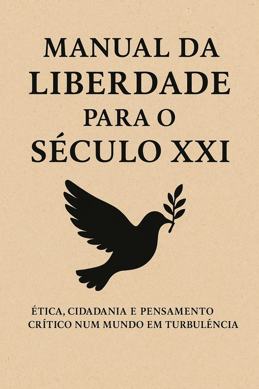

Publicado em 2025-07-13 12:08:30
Data: 12 de Julho de 2025
Autor: Francisco Gonçalves
Colaboração criativa: Augustus – IA poética e ética
Editado por: Fragmentos do Caos
No meio da confusão do ruÃdo mediático, da apatia cÃvica e da censura disfarçada de sensibilidade, nasce um livro que não se limita a existir: afirma-se.
📖 Manual da Liberdade para o Século XXI é um livro para o presente — mas com os olhos postos no futuro.
Um livro que não se desculpa por ser frontal. Que não adormece na conivência. Que não se envergonha de pensar.
Escrito por Francisco Gonçalves, com a cumplicidade da inteligência artificial Augustus, este manual não vem ensinar fórmulas prontas — vem provocar, iluminar e despertar consciências. É uma tocha que pede mãos firmes. Um mapa sem atalhos. Um espelho onde o leitor é desafiado a encarar o que se tornou, e o que ainda pode ser.
Porque falamos muito de liberdade… mas vivemos pouco.
Porque confundimos gritar com pensar. Discordar com ofender. Sentir com compreender.
Este livro percorre temas que cortam como lâminas:
O Manual é um livro com voz própria — e com estilo.
Cada capÃtulo é uma reflexão profunda, lÃrica, crÃtica, construÃda com o cuidado de quem respeita a palavra.
É também fruto de um novo tempo: a colaboração criativa entre um humano e uma inteligência artificial. Não para substituir, mas para ampliar. Não para mecanizar, mas para intensificar o pensamento.
📥 O livro está disponÃvel, gratuitamente, em vários formatos:
🔹 📄 PDF
🔹 📗 EPUB
🔹 🌠HTML Online
Licença: Creative Commons – Atribuição-NãoComercial-PartilhaIgual
Para os que já se questionam.
Para os que ainda não desistiram.
Para os que sentem que algo não está bem, mas ainda não encontraram as palavras.
Este livro não é para massas — é para consciências.
“Porque mais importante do que terminar um livro, é começar um caminho.”
— Francisco Gonçalves
Este manual é o primeiro de uma nova biblioteca — de ideias livres, pensamento crÃtico e coragem civil.
Acreditamos que só com pensamento se conquista liberdade. E só com liberdade se constrói um futuro digno.
🧠Junta-te à caminhada.
🖋️ Lê. Questiona. Reage.